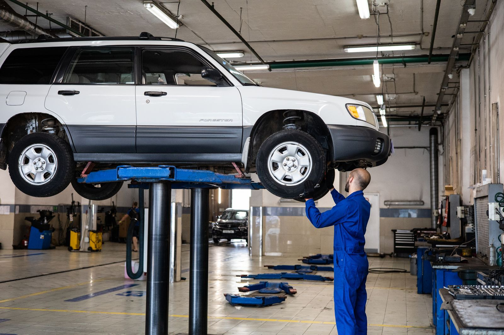

A tyre centre designed around the job in front of us.
TrueTrack is a fictional local workshop concept built for drivers who want practical tyre advice, accurate wheel-care equipment and an easy way to plan a visit.
Inspect. Explain. Agree. Complete.
We avoid treating every symptom as the same problem. Pulling, vibration, pressure loss and tyre wear each deserve the right check before work begins.

Visible condition first
Tyre tread, wear pattern, sidewall health and inflation reviewed before replacement advice.
Plain language
Service scope and diagnostic readings explained clearly without workshop jargon.
Clear cost boundary
Practical options matched to vehicle specifications, road use and agreed upfront.
Final confirmation
Torque check, measured pressures and a final visible look-over close the job.
A disciplined visit without unnecessary ceremony.
Clear diagnostic steps, visible condition checks, and agreed boundaries before tools touch the vehicle.
A useful first conversation
Vehicle, tyre size, symptoms and intended use establish the starting point.
Condition-led advice
We look at the actual tyre or wheel issue before recommending a service.
A clear cost boundary
Service guidance is shown upfront; tyre quotations depend on exact size and stock.
A final confirmation
The relevant pressure, fitment or measurement check closes the job.
Options for everyday roads.
We commonly work with passenger-car, SUV and two-wheeler tyre sizes across established global brands.
One practical workshop. Five essential services.
Walk-ins are welcome; appointments help us plan your bay time.